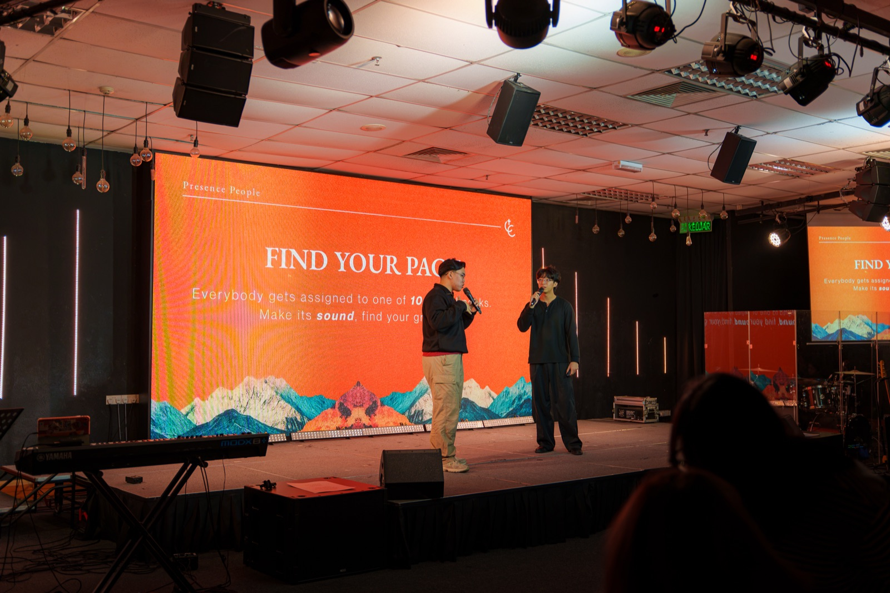
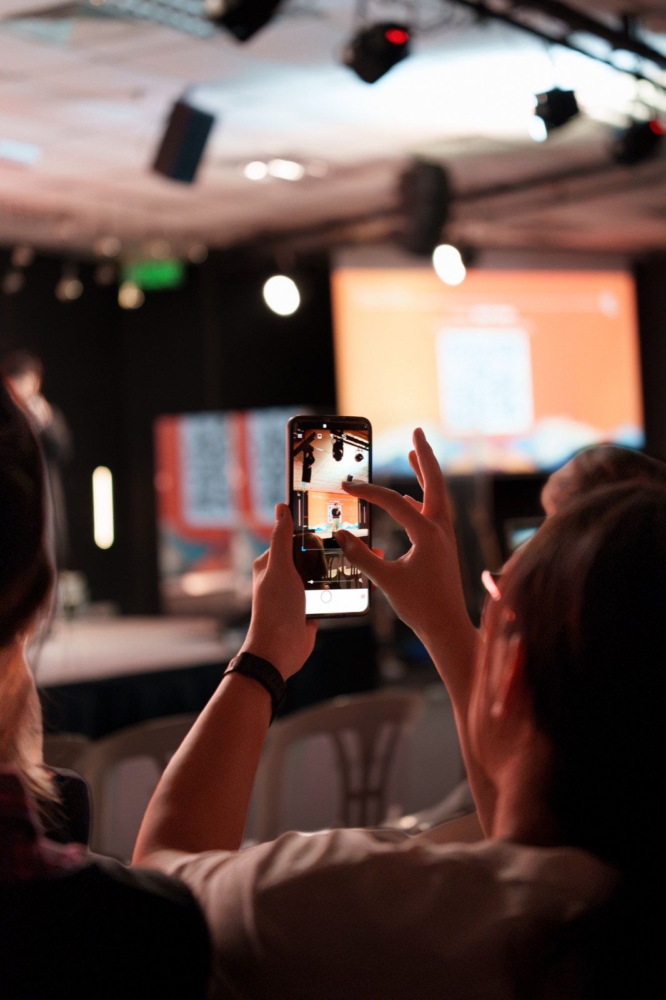
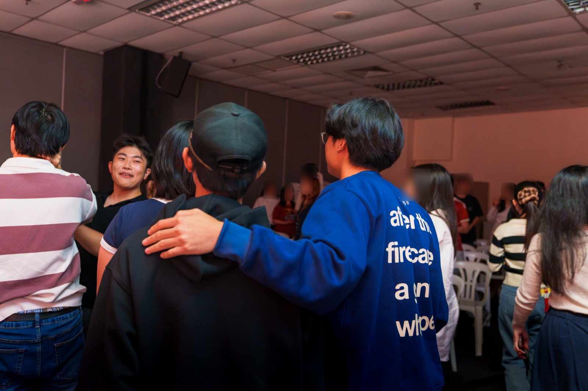

Find Your Pack
Replaced handwritten group-assignment slips at a live event. 113 players checked in by QR code, and every phone revealed its secret group at the same moment.
Next.js · TypeScript · Supabase (Postgres + Realtime) · Playwright · k6
View case study →
Sep 2026
- Ran live with 113 concurrent players and no failed reveals. Organisers no longer had to write up, hand out or reshuffle paper slips.
- Groups are built from who actually checked in, so no-shows no longer leave groups uneven.
- Players never sign up or share personal data, so there's nothing stopping them from joining, and every player got in within the check-in window.
- Load-tested with 300+ simulated users (nearly 3x the live crowd), so the same setup works for bigger events.
- Reveals can't leak early: timing and group secrecy are enforced on the server, so nobody can find out their group ahead of time by inspecting the app.
- Found and documented a real-world issue during the live run (players whose phones locked dropped off the host's live count), which now guides the next version.

